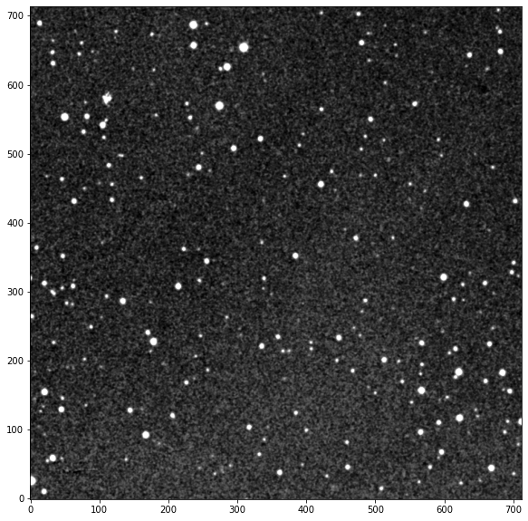

<!DOCTYPE html>
<html class="writer-html5" lang="en" >
<head>
  <meta charset="utf-8" />
  <meta name="generator" content="Docutils 0.17.1: http://docutils.sourceforge.net/" />

  <meta name="viewport" content="width=device-width, initial-scale=1.0" />
  
  <title>core &mdash; prose  documentation</title>
  

  
  <link rel="stylesheet" href="../_static/css/theme.css" type="text/css" />
  <link rel="stylesheet" href="../_static/pygments.css" type="text/css" />
  <link rel="stylesheet" href="../_static/pygments.css" type="text/css" />
  <link rel="stylesheet" href="../_static/css/theme.css" type="text/css" />
  <link rel="stylesheet" href="../_static/copybutton.css" type="text/css" />
  <link rel="stylesheet" href="../_static/jupyter-sphinx.css" type="text/css" />
  <link rel="stylesheet" href="../_static/thebelab.css" type="text/css" />

  
  

  
  

  

  
  <!--[if lt IE 9]>
    <script src="../_static/js/html5shiv.min.js"></script>
  <![endif]-->
  
    
      <script type="text/javascript" id="documentation_options" data-url_root="../" src="../_static/documentation_options.js"></script>
        <script data-url_root="../" id="documentation_options" src="../_static/documentation_options.js"></script>
        <script src="../_static/jquery.js"></script>
        <script src="../_static/underscore.js"></script>
        <script src="../_static/doctools.js"></script>
        <script src="../_static/clipboard.min.js"></script>
        <script src="../_static/copybutton.js"></script>
        <script src="../_static/thebelab-helper.js"></script>
        <script src="https://cdnjs.cloudflare.com/ajax/libs/require.js/2.3.4/require.min.js"></script>
        <script src="https://unpkg.com/@jupyter-widgets/html-manager@^0.20.0/dist/embed-amd.js"></script>
        <script crossorigin="anonymous" integrity="sha256-Ae2Vz/4ePdIu6ZyI/5ZGsYnb+m0JlOmKPjt6XZ9JJkA=" src="https://cdnjs.cloudflare.com/ajax/libs/require.js/2.3.4/require.min.js"></script>
    
    <script type="text/javascript" src="../_static/js/theme.js"></script>

    
    <link rel="index" title="Index" href="../genindex.html" />
    <link rel="search" title="Search" href="../search.html" /> 
</head>

<body class="">

   
    

  <div class="main">
    <div id="small-menu">
      <div id="title">
        <div class="icon-home">prose</div>
        <div class="version text-icon">
          <!-- <i data-feather="git-branch"></i> -->
          
            latest
          
        </div>
      </div>
      <div id="small-menu-button">MENU</div>
    </div>
    
    <nav id="navmenu">
        <div class="nav-head" >
          

          
            <a href="../index.html" class="icon icon-home"> prose
          

          
          </a>

          
            

                <div class="version text-icon">
                  <!-- <i data-feather="git-branch"></i> -->
                   <!--
                    deving
                  -->
                </div>
          

          
<div role="search">
  <form id="rtd-search-form" class="" action="../search.html" method="get">
    <input type="text" name="q" placeholder="Search docs" />
    <input type="hidden" name="check_keywords" value="yes" />
    <input type="hidden" name="area" value="default" />
  </form>
</div>

          
        </div>

        
        <div class="" data-spy="affix" role="navigation" aria-label="main navigation">
          
            
            
              
            
            
              <p class="caption" role="heading"><span class="caption-text">References</span></p>
<ul>
<li class="toctree-l1"><a class="reference internal" href="../installation.html">Installation</a></li>
<li class="toctree-l1"><a class="reference internal" href="../notebooks/quickstart.html">Quickstart</a></li>
<li class="toctree-l1"><a class="reference internal" href="../core.html">What is a pipeline?</a></li>
<li class="toctree-l1"><a class="reference internal" href="../blocks.html">Blocks</a></li>
<li class="toctree-l1"><a class="reference internal" href="../api.html">API</a></li>
</ul>
<p class="caption" role="heading"><span class="caption-text">Tutorials</span></p>
<ul>
<li class="toctree-l1"><a class="reference internal" href="../notebooks/fits_manager.html">Fits manager</a></li>
<li class="toctree-l1"><a class="reference internal" href="../notebooks/reduction.html">Photometric reduction</a></li>
<li class="toctree-l1"><a class="reference internal" href="../notebooks/manual_reduction.html">Manual reduction</a></li>
<li class="toctree-l1"><a class="reference internal" href="../notebooks/custom_pipeline.html">Custom pipeline</a></li>
<li class="toctree-l1"><a class="reference internal" href="../notebooks/modeling.html">Modeling</a></li>
<li class="toctree-l1"><a class="reference internal" href="../notebooks/reports.html">Reports</a></li>
<li class="toctree-l1"><a class="reference internal" href="../notebooks/neb.html">Near Eclipsing Binary diagnostic</a></li>
</ul>
<p class="caption" role="heading"><span class="caption-text">Notes</span></p>
<ul>
<li class="toctree-l1"><a class="reference internal" href="../notebooks/phot.html">Data products: <code class="docutils literal notranslate"><span class="pre">.phot</span></code></a></li>
<li class="toctree-l1"><a class="reference internal" href="../notebooks/extra.html">Useful tips</a></li>
</ul>

            
          
        </div>
        
      <div class="github-link">
        <!-- <a href="https://github.com/lgrcia/prose">view on github</a> -->
      </div>
    </nav>

    <div class="content">
      
      <div class="rst-content">
      
        <div role="main" class="document" itemscope="itemscope" itemtype="http://schema.org/Article">
        <div itemprop="articleBody">
          
  <section id="core">
<h1>core<a class="headerlink" href="#core" title="Permalink to this headline">¶</a></h1>
<dl class="py class">
<dt class="sig sig-object py" id="prose.Image">
<em class="property"><span class="pre">class</span><span class="w"> </span></em><span class="sig-prename descclassname"><span class="pre">prose.</span></span><span class="sig-name descname"><span class="pre">Image</span></span><span class="sig-paren">(</span><em class="sig-param"><span class="n"><span class="pre">fitspath</span></span><span class="o"><span class="pre">=</span></span><span class="default_value"><span class="pre">None</span></span></em>, <em class="sig-param"><span class="n"><span class="pre">data</span></span><span class="o"><span class="pre">=</span></span><span class="default_value"><span class="pre">None</span></span></em>, <em class="sig-param"><span class="n"><span class="pre">header</span></span><span class="o"><span class="pre">=</span></span><span class="default_value"><span class="pre">None</span></span></em>, <em class="sig-param"><span class="o"><span class="pre">**</span></span><span class="n"><span class="pre">kwargs</span></span></em><span class="sig-paren">)</span><a class="headerlink" href="#prose.Image" title="Permalink to this definition">¶</a></dt>
<dd><p>Base object containing FITS image data and metadata</p>
<p>When a FITS path (or header) is provided, keyword values are used to identify and instantiate a <a class="reference internal" href="../generated/prose.Telescope.html#prose.Telescope" title="prose.Telescope"><code class="xref py py-class docutils literal notranslate"><span class="pre">Telescope</span></code></a> object. Image attributes then use this object to retrieve specific image information such as ra, dec, untis… etc</p>
<dl class="field-list simple">
<dt class="field-odd">Parameters</dt>
<dd class="field-odd"><ul class="simple">
<li><p><strong>fitspath</strong> (<em>str or Path, optional</em>) – file path , by default None</p></li>
<li><p><strong>data</strong> (<em>numpy.ndarray, optional</em>) – image data, by default None</p></li>
<li><p><strong>header</strong> (<em>dict-like, optional</em>) – image metadata, by default None</p></li>
</ul>
</dd>
</dl>
<p class="rubric">Example</p>
<div class="jupyter_cell jupyter_container docutils container">
<div class="cell_input code_cell docutils container">
<div class="highlight-default notranslate"><div class="highlight"><pre><span></span><span class="kn">from</span> <span class="nn">prose.tutorials</span> <span class="kn">import</span> <span class="n">image_sample</span>

<span class="c1"># loading and showing an example image</span>
<span class="n">image</span> <span class="o">=</span> <span class="n">image_sample</span><span class="p">(</span><span class="s2">&quot;05 38 44.851&quot;</span><span class="p">,</span> <span class="s2">&quot;+04 32 47.68&quot;</span><span class="p">)</span>
<span class="n">image</span><span class="o">.</span><span class="n">show</span><span class="p">()</span>
</pre></div>
</div>
</div>
<div class="cell_output docutils container">
<div class="output stream highlight-none notranslate"><div class="highlight"><pre><span></span>INFO Querying https://archive.stsci.edu/cgi-bin/dss_form
</pre></div>
</div>
<div class="output stream highlight-none notranslate"><div class="highlight"><pre><span></span>INFO telescope Palomar Schmidt not found - using default
</pre></div>
</div>

</div>
</div>
<div class="jupyter_cell jupyter_container docutils container">
<div class="cell_input code_cell docutils container">
<div class="highlight-default notranslate"><div class="highlight"><pre><span></span><span class="n">image</span><span class="o">.</span><span class="n">header</span><span class="p">[</span><span class="mi">0</span><span class="p">:</span><span class="mi">10</span><span class="p">]</span> <span class="c1"># the 10 first lines</span>
</pre></div>
</div>
</div>
<div class="cell_output docutils container">
<div class="output text_plain highlight-none notranslate"><div class="highlight"><pre><span></span>SIMPLE  =                    T /FITS: Compliance                                
BITPIX  =                   16 /FITS: I*2 Data                                  
NAXIS   =                    2 /FITS: 2-D Image Data                            
NAXIS1  =                  713 /FITS: X Dimension                               
NAXIS2  =                  714 /FITS: Y Dimension                               
EXTEND  =                    T /FITS: File can contain extensions               
DATE    = &#39;2022-03-14        &#39;  /FITS: Creation Date                            
ORIGIN  = &#39;STScI/MAST&#39;         /GSSS: STScI Digitized Sky Survey                
SURVEY  = &#39;POSSI-O &#39;           /GSSS: Sky Survey                                
REGION  = &#39;XO538   &#39;           /GSSS: Region Name                               
</pre></div>
</div>
</div>
</div>
<p>Once this object is instantiated, its parameters are mapped to the ones of the telescope, detected from the header information. This exposes conveniant attributres, for example:</p>
<div class="jupyter_cell jupyter_container docutils container">
<div class="cell_input code_cell docutils container">
<div class="highlight-default notranslate"><div class="highlight"><pre><span></span><span class="nb">print</span><span class="p">(</span><span class="sa">f</span><span class="s2">&quot;pixel scale : </span><span class="si">{</span><span class="n">image</span><span class="o">.</span><span class="n">pixel_scale</span><span class="si">:</span><span class="s2">.2f</span><span class="si">}</span><span class="se">\n</span><span class="s2">FOV: </span><span class="si">{</span><span class="n">image</span><span class="o">.</span><span class="n">fov</span><span class="si">}</span><span class="se">\n</span><span class="s2">night: </span><span class="si">{</span><span class="n">image</span><span class="o">.</span><span class="n">night_date</span><span class="si">}</span><span class="se">\n</span><span class="s2">&quot;</span><span class="p">)</span>
</pre></div>
</div>
</div>
<div class="cell_output docutils container">
<div class="output stream highlight-none notranslate"><div class="highlight"><pre><span></span>pixel scale : 1.01 arcsec
FOV: [0.20031318 0.20003263] deg
night: 1955-11-22

</pre></div>
</div>
</div>
</div>
<p>some of them being directly translated into astropy Quantity or datetime object.</p>
<dl class="py method">
<dt class="sig sig-object py" id="prose.Image.copy">
<span class="sig-name descname"><span class="pre">copy</span></span><span class="sig-paren">(</span><em class="sig-param"><span class="n"><span class="pre">data</span></span><span class="o"><span class="pre">=</span></span><span class="default_value"><span class="pre">True</span></span></em><span class="sig-paren">)</span><a class="headerlink" href="#prose.Image.copy" title="Permalink to this definition">¶</a></dt>
<dd><p>Copy of image object</p>
<dl class="field-list simple">
<dt class="field-odd">Parameters</dt>
<dd class="field-odd"><p><strong>data</strong> (<em>bool, optional</em>) – whether to copy data, by default True</p>
</dd>
<dt class="field-even">Returns</dt>
<dd class="field-even"><p>copied object</p>
</dd>
<dt class="field-odd">Return type</dt>
<dd class="field-odd"><p><a class="reference internal" href="../generated/prose.Image.html#prose.Image" title="prose.Image">Image</a></p>
</dd>
</dl>
</dd></dl>

<dl class="py method">
<dt class="sig sig-object py" id="prose.Image.get">
<span class="sig-name descname"><span class="pre">get</span></span><span class="sig-paren">(</span><em class="sig-param"><span class="n"><span class="pre">key</span></span></em>, <em class="sig-param"><span class="n"><span class="pre">default</span></span><span class="o"><span class="pre">=</span></span><span class="default_value"><span class="pre">None</span></span></em><span class="sig-paren">)</span><a class="headerlink" href="#prose.Image.get" title="Permalink to this definition">¶</a></dt>
<dd><p>Return corresponding value from header, similar to <code class="docutils literal notranslate"><span class="pre">dict.get</span></code></p>
<dl class="field-list simple">
<dt class="field-odd">Parameters</dt>
<dd class="field-odd"><ul class="simple">
<li><p><strong>key</strong> (<em>str</em>)</p></li>
<li><p><strong>default</strong> (<em>any, optional</em>) – value to return if key not in <code class="docutils literal notranslate"><span class="pre">Image.header</span></code>, by default None</p></li>
</ul>
</dd>
</dl>
</dd></dl>

<dl class="py property">
<dt class="sig sig-object py" id="prose.Image.wcs">
<em class="property"><span class="pre">property</span><span class="w"> </span></em><span class="sig-name descname"><span class="pre">wcs</span></span><a class="headerlink" href="#prose.Image.wcs" title="Permalink to this definition">¶</a></dt>
<dd><p>astropy.wcs.WCS object associated with the FITS <code class="docutils literal notranslate"><span class="pre">Image.header</span></code></p>
</dd></dl>

<dl class="py property">
<dt class="sig sig-object py" id="prose.Image.exposure">
<em class="property"><span class="pre">property</span><span class="w"> </span></em><span class="sig-name descname"><span class="pre">exposure</span></span><a class="headerlink" href="#prose.Image.exposure" title="Permalink to this definition">¶</a></dt>
<dd><p>Image exposure time in seconds</p>
<dl class="field-list simple">
<dt class="field-odd">Return type</dt>
<dd class="field-odd"><p>astropy.units.quantity.Quantity</p>
</dd>
</dl>
</dd></dl>

<dl class="py property">
<dt class="sig sig-object py" id="prose.Image.jd_utc">
<em class="property"><span class="pre">property</span><span class="w"> </span></em><span class="sig-name descname"><span class="pre">jd_utc</span></span><a class="headerlink" href="#prose.Image.jd_utc" title="Permalink to this definition">¶</a></dt>
<dd><p>JD UTC time of the observation</p>
<dl class="field-list simple">
<dt class="field-odd">Return type</dt>
<dd class="field-odd"><p>astropy.time.Time</p>
</dd>
</dl>
</dd></dl>

<dl class="py property">
<dt class="sig sig-object py" id="prose.Image.bjd_tdb">
<em class="property"><span class="pre">property</span><span class="w"> </span></em><span class="sig-name descname"><span class="pre">bjd_tdb</span></span><a class="headerlink" href="#prose.Image.bjd_tdb" title="Permalink to this definition">¶</a></dt>
<dd><p>BJD TDB time of the observation</p>
<dl class="field-list simple">
<dt class="field-odd">Return type</dt>
<dd class="field-odd"><p>astropy.time.Time</p>
</dd>
</dl>
</dd></dl>

<dl class="py property">
<dt class="sig sig-object py" id="prose.Image.seeing">
<em class="property"><span class="pre">property</span><span class="w"> </span></em><span class="sig-name descname"><span class="pre">seeing</span></span><a class="headerlink" href="#prose.Image.seeing" title="Permalink to this definition">¶</a></dt>
<dd><p>Seeing of the image as written is header</p>
</dd></dl>

<dl class="py property">
<dt class="sig sig-object py" id="prose.Image.ra">
<em class="property"><span class="pre">property</span><span class="w"> </span></em><span class="sig-name descname"><span class="pre">ra</span></span><a class="headerlink" href="#prose.Image.ra" title="Permalink to this definition">¶</a></dt>
<dd><p>RA of the image as written in header</p>
<dl class="field-list simple">
<dt class="field-odd">Return type</dt>
<dd class="field-odd"><p>astropy.coordinates.angles.Angle</p>
</dd>
</dl>
</dd></dl>

<dl class="py property">
<dt class="sig sig-object py" id="prose.Image.dec">
<em class="property"><span class="pre">property</span><span class="w"> </span></em><span class="sig-name descname"><span class="pre">dec</span></span><a class="headerlink" href="#prose.Image.dec" title="Permalink to this definition">¶</a></dt>
<dd><p>DEC of the image as written in header</p>
<dl class="field-list simple">
<dt class="field-odd">Return type</dt>
<dd class="field-odd"><p>astropy.coordinates.angles.Angle</p>
</dd>
</dl>
</dd></dl>

<dl class="py property">
<dt class="sig sig-object py" id="prose.Image.flip">
<em class="property"><span class="pre">property</span><span class="w"> </span></em><span class="sig-name descname"><span class="pre">flip</span></span><a class="headerlink" href="#prose.Image.flip" title="Permalink to this definition">¶</a></dt>
<dd><p>Telescope flip as written in image header</p>
</dd></dl>

<dl class="py property">
<dt class="sig sig-object py" id="prose.Image.airmass">
<em class="property"><span class="pre">property</span><span class="w"> </span></em><span class="sig-name descname"><span class="pre">airmass</span></span><a class="headerlink" href="#prose.Image.airmass" title="Permalink to this definition">¶</a></dt>
<dd><p>Observation airmass as written in image header</p>
</dd></dl>

<dl class="py property">
<dt class="sig sig-object py" id="prose.Image.shape">
<em class="property"><span class="pre">property</span><span class="w"> </span></em><span class="sig-name descname"><span class="pre">shape</span></span><a class="headerlink" href="#prose.Image.shape" title="Permalink to this definition">¶</a></dt>
<dd><p>Shape of the image data np.ndarray</p>
<dl class="field-list simple">
<dt class="field-odd">Return type</dt>
<dd class="field-odd"><p>2D tuple</p>
</dd>
</dl>
</dd></dl>

<dl class="py property">
<dt class="sig sig-object py" id="prose.Image.date">
<em class="property"><span class="pre">property</span><span class="w"> </span></em><span class="sig-name descname"><span class="pre">date</span></span><a class="headerlink" href="#prose.Image.date" title="Permalink to this definition">¶</a></dt>
<dd><p>datetime of the observation</p>
<dl class="field-list simple">
<dt class="field-odd">Return type</dt>
<dd class="field-odd"><p>datetime.datetime</p>
</dd>
</dl>
</dd></dl>

<dl class="py property">
<dt class="sig sig-object py" id="prose.Image.night_date">
<em class="property"><span class="pre">property</span><span class="w"> </span></em><span class="sig-name descname"><span class="pre">night_date</span></span><a class="headerlink" href="#prose.Image.night_date" title="Permalink to this definition">¶</a></dt>
<dd><p>date of the night when night started.</p>
<dl class="field-list simple">
<dt class="field-odd">Return type</dt>
<dd class="field-odd"><p>datetime.date</p>
</dd>
</dl>
</dd></dl>

<dl class="py property">
<dt class="sig sig-object py" id="prose.Image.label">
<em class="property"><span class="pre">property</span><span class="w"> </span></em><span class="sig-name descname"><span class="pre">label</span></span><a class="headerlink" href="#prose.Image.label" title="Permalink to this definition">¶</a></dt>
<dd><p>A conveniant {Telescope}_{Date}_{Object}_{Filter} string</p>
<dl class="field-list simple">
<dt class="field-odd">Return type</dt>
<dd class="field-odd"><p>str</p>
</dd>
</dl>
</dd></dl>

<dl class="py property">
<dt class="sig sig-object py" id="prose.Image.filter">
<em class="property"><span class="pre">property</span><span class="w"> </span></em><span class="sig-name descname"><span class="pre">filter</span></span><a class="headerlink" href="#prose.Image.filter" title="Permalink to this definition">¶</a></dt>
<dd><p>Observation filter as written in image header</p>
</dd></dl>

<dl class="py method">
<dt class="sig sig-object py" id="prose.Image.show">
<span class="sig-name descname"><span class="pre">show</span></span><span class="sig-paren">(</span><em class="sig-param"><span class="n"><span class="pre">cmap</span></span><span class="o"><span class="pre">=</span></span><span class="default_value"><span class="pre">'Greys_r'</span></span></em>, <em class="sig-param"><span class="n"><span class="pre">ax</span></span><span class="o"><span class="pre">=</span></span><span class="default_value"><span class="pre">None</span></span></em>, <em class="sig-param"><span class="n"><span class="pre">figsize</span></span><span class="o"><span class="pre">=</span></span><span class="default_value"><span class="pre">(10,</span> <span class="pre">10)</span></span></em>, <em class="sig-param"><span class="n"><span class="pre">stars</span></span><span class="o"><span class="pre">=</span></span><span class="default_value"><span class="pre">None</span></span></em>, <em class="sig-param"><span class="n"><span class="pre">stars_labels</span></span><span class="o"><span class="pre">=</span></span><span class="default_value"><span class="pre">True</span></span></em>, <em class="sig-param"><span class="n"><span class="pre">zscale</span></span><span class="o"><span class="pre">=</span></span><span class="default_value"><span class="pre">True</span></span></em>, <em class="sig-param"><span class="n"><span class="pre">frame</span></span><span class="o"><span class="pre">=</span></span><span class="default_value"><span class="pre">False</span></span></em>, <em class="sig-param"><span class="n"><span class="pre">contrast</span></span><span class="o"><span class="pre">=</span></span><span class="default_value"><span class="pre">0.1</span></span></em><span class="sig-paren">)</span><a class="headerlink" href="#prose.Image.show" title="Permalink to this definition">¶</a></dt>
<dd><p>Show image data</p>
<dl class="field-list simple">
<dt class="field-odd">Parameters</dt>
<dd class="field-odd"><ul class="simple">
<li><p><strong>cmap</strong> (<em>str, optional</em>) – matplotlib colormap, by default “Greys_r”</p></li>
<li><p><strong>ax</strong> (<em>subplot, optional</em>) – matplotlbib Axes in which to plot, by default None</p></li>
<li><p><strong>figsize</strong> (<em>tuple, optional</em>) – matplotlib figure size if ax not sepcified, by default (10,10)</p></li>
<li><p><strong>stars</strong> (<em>bool, optional</em>) – whether to show <code class="docutils literal notranslate"><span class="pre">Image.stars_coords</span></code>, by default None</p></li>
<li><p><strong>stars_labels</strong> (<em>bool, optional</em>) – whether top show stars indexes, by default True</p></li>
<li><p><strong>zscale</strong> (<em>bool, optional</em>) – whether to apply a z scale to plotted image data, by default False</p></li>
<li><p><strong>frame</strong> (<em>bool, optional</em>) – whether to show astronomical coordinates axes, by default False</p></li>
<li><p><strong>contrast</strong> (<em>float, optional</em>) – image contrast used in image scaling, by default 0.1</p></li>
</ul>
</dd>
</dl>
<div class="admonition seealso">
<p class="admonition-title">See also</p>
<dl class="simple">
<dt><a class="reference internal" href="../generated/prose.Image.show_cutout.html#prose.Image.show_cutout" title="prose.Image.show_cutout"><code class="xref py py-obj docutils literal notranslate"><span class="pre">show_cutout</span></code></a></dt><dd><p>Show a specific star cutout</p>
</dd>
<dt><a class="reference internal" href="../generated/prose.Image.plot_catalog.html#prose.Image.plot_catalog" title="prose.Image.plot_catalog"><code class="xref py py-obj docutils literal notranslate"><span class="pre">plot_catalog</span></code></a></dt><dd><p>Plot catalog stars on an image</p>
</dd>
<dt><code class="xref py py-obj docutils literal notranslate"><span class="pre">plot_circle</span></code></dt><dd><p>Plot circle with radius in astronomical units</p>
</dd>
</dl>
</div>
</dd></dl>

<dl class="py method">
<dt class="sig sig-object py" id="prose.Image.show_cutout">
<span class="sig-name descname"><span class="pre">show_cutout</span></span><span class="sig-paren">(</span><em class="sig-param"><span class="n"><span class="pre">star</span></span><span class="o"><span class="pre">=</span></span><span class="default_value"><span class="pre">None</span></span></em>, <em class="sig-param"><span class="n"><span class="pre">size</span></span><span class="o"><span class="pre">=</span></span><span class="default_value"><span class="pre">200</span></span></em>, <em class="sig-param"><span class="n"><span class="pre">marks</span></span><span class="o"><span class="pre">=</span></span><span class="default_value"><span class="pre">True</span></span></em>, <em class="sig-param"><span class="o"><span class="pre">**</span></span><span class="n"><span class="pre">kwargs</span></span></em><span class="sig-paren">)</span><a class="headerlink" href="#prose.Image.show_cutout" title="Permalink to this definition">¶</a></dt>
<dd><p>Show a zoomed cutout around a detected star or coordinates</p>
<dl class="field-list simple">
<dt class="field-odd">Parameters</dt>
<dd class="field-odd"><ul class="simple">
<li><p><strong>star</strong> (<em>[type], optional</em>) – detected star id or (x, y) coordinate, by default None</p></li>
<li><p><strong>size</strong> (<em>int, optional</em>) – side size of square cutout in pixel, by default 200</p></li>
</ul>
</dd>
</dl>
</dd></dl>

<dl class="py property">
<dt class="sig sig-object py" id="prose.Image.skycoord">
<em class="property"><span class="pre">property</span><span class="w"> </span></em><span class="sig-name descname"><span class="pre">skycoord</span></span><a class="headerlink" href="#prose.Image.skycoord" title="Permalink to this definition">¶</a></dt>
<dd><p>astropy SkyCoord object based on header RAn, DEC</p>
</dd></dl>

<dl class="py property">
<dt class="sig sig-object py" id="prose.Image.fov">
<em class="property"><span class="pre">property</span><span class="w"> </span></em><span class="sig-name descname"><span class="pre">fov</span></span><a class="headerlink" href="#prose.Image.fov" title="Permalink to this definition">¶</a></dt>
<dd><p>Field of view of the image in degrees</p>
<dl class="field-list simple">
<dt class="field-odd">Return type</dt>
<dd class="field-odd"><p>astropy.units Quantity</p>
</dd>
</dl>
</dd></dl>

<dl class="py property">
<dt class="sig sig-object py" id="prose.Image.pixel_scale">
<em class="property"><span class="pre">property</span><span class="w"> </span></em><span class="sig-name descname"><span class="pre">pixel_scale</span></span><a class="headerlink" href="#prose.Image.pixel_scale" title="Permalink to this definition">¶</a></dt>
<dd><p>Pixel scale (or plate scale) in arcseconds</p>
<dl class="field-list simple">
<dt class="field-odd">Return type</dt>
<dd class="field-odd"><p>astropy.units Quantity</p>
</dd>
</dl>
</dd></dl>

<dl class="py method">
<dt class="sig sig-object py" id="prose.Image.plot_aperture">
<span class="sig-name descname"><span class="pre">plot_aperture</span></span><span class="sig-paren">(</span><em class="sig-param"><span class="n"><span class="pre">center</span></span></em>, <em class="sig-param"><span class="n"><span class="pre">arcmin</span></span><span class="o"><span class="pre">=</span></span><span class="default_value"><span class="pre">2.5</span></span></em><span class="sig-paren">)</span><a class="headerlink" href="#prose.Image.plot_aperture" title="Permalink to this definition">¶</a></dt>
<dd><p>Plot an aperture with radius defined in arcmin</p>
<p>must be over <a class="reference internal" href="../generated/prose.Image.show.html#prose.Image.show" title="prose.Image.show"><code class="xref py py-class docutils literal notranslate"><span class="pre">Image.show</span></code></a> or <a class="reference internal" href="../generated/prose.Image.show_cutout.html#prose.Image.show_cutout" title="prose.Image.show_cutout"><code class="xref py py-class docutils literal notranslate"><span class="pre">Image.show_cutout</span></code></a> plot)</p>
<dl class="field-list simple">
<dt class="field-odd">Parameters</dt>
<dd class="field-odd"><ul class="simple">
<li><p><strong>center</strong> (<em>int or tuple-like</em>) – center of the aperture
- if int: index of <code class="docutils literal notranslate"><span class="pre">Image.stars_coords</span></code> serving as center</p></li>
<li><p><strong>arcmin</strong> (<em>float, optional</em>) – radius of the aperture in arcminutes, by default 2.5</p></li>
</ul>
</dd>
</dl>
</dd></dl>

<dl class="py method">
<dt class="sig sig-object py" id="prose.Image.plot_catalog">
<span class="sig-name descname"><span class="pre">plot_catalog</span></span><span class="sig-paren">(</span><em class="sig-param"><span class="n"><span class="pre">name</span></span></em>, <em class="sig-param"><span class="n"><span class="pre">color</span></span><span class="o"><span class="pre">=</span></span><span class="default_value"><span class="pre">'y'</span></span></em>, <em class="sig-param"><span class="n"><span class="pre">label</span></span><span class="o"><span class="pre">=</span></span><span class="default_value"><span class="pre">False</span></span></em>, <em class="sig-param"><span class="n"><span class="pre">n</span></span><span class="o"><span class="pre">=</span></span><span class="default_value"><span class="pre">100000</span></span></em><span class="sig-paren">)</span><a class="headerlink" href="#prose.Image.plot_catalog" title="Permalink to this definition">¶</a></dt>
<dd><p>Plot catalog stars</p>
<p>must be over <a class="reference internal" href="../generated/prose.Image.show.html#prose.Image.show" title="prose.Image.show"><code class="xref py py-class docutils literal notranslate"><span class="pre">Image.show</span></code></a> or <a class="reference internal" href="../generated/prose.Image.show_cutout.html#prose.Image.show_cutout" title="prose.Image.show_cutout"><code class="xref py py-class docutils literal notranslate"><span class="pre">Image.show_cutout</span></code></a> plot</p>
<dl class="field-list simple">
<dt class="field-odd">Parameters</dt>
<dd class="field-odd"><ul class="simple">
<li><p><strong>name</strong> (<em>str</em>) – catalog name as stored in :py:class:Image.catalog`</p></li>
<li><p><strong>color</strong> (<em>str, optional</em>) – color of stars markers, by default “y”</p></li>
<li><p><strong>label</strong> (<em>bool, optional</em>) – whether to show stars catalogs ids, by default False</p></li>
<li><p><strong>n</strong> (<em>int, optional</em>) – number of brightest catalog stars to show, by default 100000</p></li>
</ul>
</dd>
</dl>
</dd></dl>

<dl class="py property">
<dt class="sig sig-object py" id="prose.Image.plate_solved">
<em class="property"><span class="pre">property</span><span class="w"> </span></em><span class="sig-name descname"><span class="pre">plate_solved</span></span><a class="headerlink" href="#prose.Image.plate_solved" title="Permalink to this definition">¶</a></dt>
<dd><p>Return whether the image is plate solved</p>
</dd></dl>

</dd></dl>

<dl class="py class">
<dt class="sig sig-object py" id="prose.Block">
<em class="property"><span class="pre">class</span><span class="w"> </span></em><span class="sig-prename descclassname"><span class="pre">prose.</span></span><span class="sig-name descname"><span class="pre">Block</span></span><span class="sig-paren">(</span><em class="sig-param"><span class="n"><span class="pre">name</span></span><span class="o"><span class="pre">=</span></span><span class="default_value"><span class="pre">None</span></span></em><span class="sig-paren">)</span><a class="headerlink" href="#prose.Block" title="Permalink to this definition">¶</a></dt>
<dd><p>Single unit of processing acting on the <a class="reference internal" href="../generated/prose.Image.html#prose.Image" title="prose.Image"><code class="xref py py-class docutils literal notranslate"><span class="pre">Image</span></code></a> object</p>
<p>Reading, processing and writing <a class="reference internal" href="../generated/prose.Image.html#prose.Image" title="prose.Image"><code class="xref py py-class docutils literal notranslate"><span class="pre">Image</span></code></a> attributes. When placed in a sequence, it goes through two steps:</p>
<blockquote>
<div><ol class="arabic simple">
<li><p><a class="reference internal" href="../generated/prose.Block.run.html#prose.Block.run" title="prose.Block.run"><code class="xref py py-meth docutils literal notranslate"><span class="pre">run()</span></code></a> on each image fed to the <a class="reference internal" href="../generated/prose.Sequence.html#prose.Sequence" title="prose.Sequence"><code class="xref py py-class docutils literal notranslate"><span class="pre">Sequence</span></code></a></p></li>
<li><p><a class="reference internal" href="../generated/prose.Block.terminate.html#prose.Block.terminate" title="prose.Block.terminate"><code class="xref py py-meth docutils literal notranslate"><span class="pre">terminate()</span></code></a> called after the <a class="reference internal" href="../generated/prose.Sequence.html#prose.Sequence" title="prose.Sequence"><code class="xref py py-class docutils literal notranslate"><span class="pre">Sequence</span></code></a> is terminated</p></li>
</ol>
</div></blockquote>
<dl class="field-list simple">
<dt class="field-odd">Parameters</dt>
<dd class="field-odd"><ul class="simple">
<li><p><strong>name</strong> (<em>str, optional</em>) – name of the block, by default None</p></li>
<li><p><strong>All prose blocks must be child of this parent class</strong></p></li>
</ul>
</dd>
</dl>
<dl class="py method">
<dt class="sig sig-object py" id="prose.Block.run">
<span class="sig-name descname"><span class="pre">run</span></span><span class="sig-paren">(</span><em class="sig-param"><span class="n"><span class="pre">image</span></span></em>, <em class="sig-param"><span class="o"><span class="pre">**</span></span><span class="n"><span class="pre">kwargs</span></span></em><span class="sig-paren">)</span><a class="headerlink" href="#prose.Block.run" title="Permalink to this definition">¶</a></dt>
<dd><p>Running on a image (must be overwritten when subclassed)</p>
<dl class="field-list simple">
<dt class="field-odd">Parameters</dt>
<dd class="field-odd"><p><strong>image</strong> (<em>prose.Image</em>) – image to be processed</p>
</dd>
</dl>
</dd></dl>

<dl class="py method">
<dt class="sig sig-object py" id="prose.Block.terminate">
<span class="sig-name descname"><span class="pre">terminate</span></span><span class="sig-paren">(</span><span class="sig-paren">)</span><a class="headerlink" href="#prose.Block.terminate" title="Permalink to this definition">¶</a></dt>
<dd><p>Method called after block’s <a class="reference internal" href="../generated/prose.Sequence.html#prose.Sequence" title="prose.Sequence"><code class="xref py py-class docutils literal notranslate"><span class="pre">Sequence</span></code></a> is finished (if any)</p>
</dd></dl>

</dd></dl>

<dl class="py class">
<dt class="sig sig-object py" id="prose.Sequence">
<em class="property"><span class="pre">class</span><span class="w"> </span></em><span class="sig-prename descclassname"><span class="pre">prose.</span></span><span class="sig-name descname"><span class="pre">Sequence</span></span><span class="sig-paren">(</span><em class="sig-param"><span class="n"><span class="pre">blocks</span></span></em>, <em class="sig-param"><span class="n"><span class="pre">name=''</span></span></em>, <em class="sig-param"><span class="n"><span class="pre">loader=&lt;class</span> <span class="pre">'prose.image.Image'&gt;</span></span></em>, <em class="sig-param"><span class="n"><span class="pre">**kwargs</span></span></em><span class="sig-paren">)</span><a class="headerlink" href="#prose.Sequence" title="Permalink to this definition">¶</a></dt>
<dd></dd></dl>

</section>


        </div>
        
        </div>
        <footer>

  <hr/>

  <div role="contentinfo">
    <p>
        &#169; Copyright 2022, Lionel Garcia.

    </p>
  </div>
    
    
    
    Built with <a href="https://www.sphinx-doc.org/">Sphinx</a> using a
    
    <a href="https://github.com/readthedocs/sphinx_rtd_theme">theme</a>
    
    modified by <a href="https://github.com/lgrcia">lgrcia</a> from <a href="https://readthedocs.org">Read the Docs</a>. 

</footer>
      </div>
    </div>
  </div>

   
  <!-- small screen menu click -->
  <script>
    var smb = document.getElementById("small-menu-button")
    var navmenu = document.getElementById("navmenu")
    smb.onclick = () => {
      if (navmenu.style.display == ""){
        navmenu.style.display = "flex"
      } else {
        navmenu.style.display = (navmenu.style.display == "none")?"flex":"none"
      } 
      
    }
  </script>

</body>
</html>